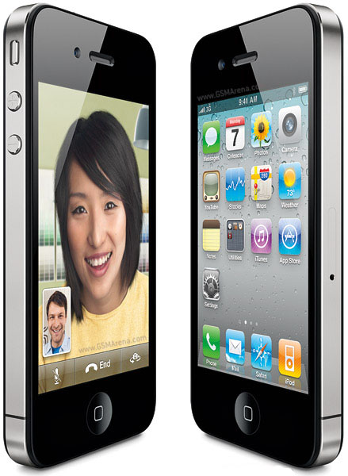

iPhone 4 получил 3,5-дюймовый дисплей с разрешением 960 x 640 пикселей. Толщина устройства всего 9,3 мм. Передняя и задняя стороны аппарата обе плоские, выполнены из стекла, торцевая окантовка – стальная. У телефона есть фронтальная камера для видеозвонков, дополнительный микрофон для шумоподавления, а слот SIM сменился на Micro SIM. Батарея обеспечивает до 14 часов в режиме разговора, 6/10 часов в режиме веб-серфинга по 3G/Wi-Fi, 10 часов просмотра видео, 40 часов прослушивания музыки и 300 часов режима ожидания. Кроме того, добавлена поддержка Wi-Fi 802.11n. Разрешение основной камеры 5 МП, имеется поддержка видеосъемки с разрешением 1280 x 720 пикселей со скоростью 30 кадров в секунду.Далее мы приводим более детальную характеристику:
Ціна:300$